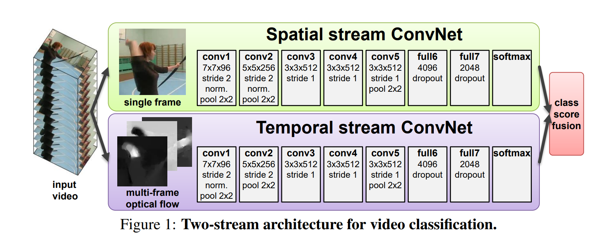

video-understanding
视频理解系列论文
经典视频理解
数据集
hmdb51
ucf101
kinetic400 ，大小130G左右有点大，有人说比较偏重于静态图像，可能不利于对运动信息的识别
something something ：https://blog.csdn.net/duokanxiewenxian/article/details/136937930
charades
论文综述
视频理解论文串讲（上）【论文精读】_哔哩哔哩_bilibili
视频理解论文串讲（下）【论文精读】_哔哩哔哩_bilibili
双流网络
Two-Stream Convolutional Networks for Action Recognition in Videos

双流网络论文逐段精读【论文精读】_哔哩哔哩_bilibili
使用LSTM，基于光流法，处理长视频
带来的提升比较有限
Beyond Short Snippets: Deep Networks for Video Classification
时间流和空间流如何合并，最后得到比较好的early fusion操作
Convolutional Two-Stream Network Fusion for Video Action Recognition
TSN
Temporal Segment Networks for Action Recognition in Videos
Non-local
使用自注意力代替LSTM
Timesformer
Is Space-Time Attention All You Need for Video Understanding?

I3D
Quo Vadis, Action Recognition? A New Model and the Kinetics Dataset
I3D(Inflated 3D ConvNet)通过将2D卷积网络的卷积核“膨胀”成3D卷积核，进而能同时处理空间（宽度、高度）和时间（帧序列）的特征。这种方法保持了2D网络中卷积核的空间模式，同时引入了时间维度的感受野。
coviar
Compressed Video Action Recognition
GitHub - chaoyuaw/pytorch-coviar: Compressed Video Action Recognition
CoViAR (Compressed Video Action Recognition) 是一个压缩视频动作识别模型，由Chao-Yuan Wu、Manzil Zaheer、Hexiang Hu、R. Manmatha、Alexander J. Smola 和 Philipp Krähenbühl 在2018年的CVPR会议上提出。
这个模型的思想是，视频在当前互联网数据中占据重要地位，因为相比其他媒介，视频可以传递更加丰富形象的信息。CoViAR 的目标是从压缩视频中识别动作。它的实现是基于PyTorch，而原始论文使用了MXNet。目前，这个代码支持UCF-101和HMDB-51数据集，而Charades数据集的支持也在计划中。
CoViAR 的特点包括：
通过直接处理压缩视频，避免了提取和存储所有表示（I帧、运动矢量和残差）的图像文件。
-
在HMDB-51和UCF-101数据集上，其结果与原始论文相当甚至更好：
-
HMDB-51：I帧52%、运动矢量40%、残差43%、CoViAR 59.2%。
-
UCF-101：I帧87%、运动矢量70%、残差80%、CoViAR 90.5%（平均3次划分；不使用光流）。
推荐阅读:
https://zhuanlan.zhihu.com/p/54939457
隐私保护+动作识别
BDQ
Privacy-Preserving Action Recognition via Motion Difference Quantization
提出了一种名为BDQ的隐私保护编码器，用于要求隐私保护的动作识别任务。BDQ编码器由三个模块组成：模糊（Blur）、差分（Difference）和量化（Quantization）。这些模块按顺序应用于输入场景，其中模糊模块(B)平滑输入帧的边缘，差分模块(D)通过连续帧之间的像素强度减法突出运动特征并抑制高级隐私属性，量化模块(Q)则去除运动差分帧中的低级隐私属性。BDQ参数通过对抗训练以端到端的方式进行优化，使其在允许动作识别属性的同时抑制隐私属性。
上图训练框架由三个部分组成：（1）BDQ 编码器，记为 E，（2）用于预测目标动作属性的 3D CNN，记为 T，（3）用于预测隐私属性的 2D CNN，记为 P
训练过程分为两个阶段：
**阶段1：**对抗训练，损失函数如下
这里，和分别表示交叉熵损失和熵函数。和分别表示和的参数。是真实动作标签，是允许在动作和隐私识别之间进行权衡的对抗权重。
**阶段2：**E和T固定，并使用以下损失函数训练P。这里，表示P的参数，是真实隐私标签
数据集：SBU, KTH, IPN
在分析部分，论文进行以下测试：
-
消融实验观察BDQ三个模块的作用
-
使用各种强大的网络尝试获取隐私信息
-
使用不同网络测试动作识别效果
-
攻击者可能会访问BDQ的训练集，训练一个网络根据BDQ的输出生成BDQ的输入。作者用一个3D Unet模拟这一攻击，发现当输入来自未经训练的 BDQ 编码器时，重建网络可以成功重建原始视频，当输入来自经过训练的 BDQ 编码器时，重建效果明显较差，隐私信息得到保护
-
让人类志愿者根据BDQ编码输出内容辨认身份，检验人类视觉系统能否看出隐私信息
-
将BDQ和Dynamic Vision Sensor (DVS)做对比，BDQ 编码器可以看作是 DVS 传感器的数字近似
Privacy-Preserving Deep Action Recognition
Privacy-Preserving Deep Action Recognition: An Adversarial Learning Framework and A New Dataset
提出了PA-HMDB51数据集，以及对抗训练的方法
Towards Privacy-Preserving Visual Recognition via Adversarial Training
Towards Privacy-Preserving Visual Recognition via Adversarial Training: A Pilot Study
这篇论文提出了一种基于对抗训练的隐私保护视觉识别框架，旨在通过主动退化原始视频数据，在保持目标任务性能的同时抑制隐私泄露风险。以下是核心内容总结：
研究背景
-
问题：智能摄像头需将视频上传至云端分析，但传统加密和差分隐私方法无法防止授权代理（如云端）滥用敏感信息（如人脸、身份）。
-
目标：设计一种变换方法，使处理后的视频仅支持目标任务（如动作识别），而阻碍隐私相关任务（如身份识别）。
方法创新
-
对抗训练框架
-
三个模块：
-
退化模块（fd）：学习对输入视频进行退化处理，平衡目标任务性能与隐私保护。
-
目标任务模型（fT）：在退化数据上执行目标识别任务（如动作识别）。
-
隐私预算模型（fb）：模拟攻击者，尝试从退化数据中预测隐私信息。
-
-
损失函数：联合优化目标任务损失（LT）和隐私预算损失（LB），公式为：
-
-
应对“∀挑战”的策略
-
模型重启（Restarting）：定期重置隐私预算模型的权重，防止退化模块过拟合特定攻击模型。
-
模型集成（Ensemble）：使用多个不同结构的隐私预算模型联合训练，增强对未知攻击模型的泛化能力。
-
实验与结果
-
数据集：
-
SBU：动作识别（目标任务） vs. 身份识别（隐私任务）。
-
UCF-101/VISPR：跨数据集训练，动作识别（UCF-101） vs. 多属性隐私保护（VISPR标注的性别、种族等）。
-
-
关键结论：
-
提出的方法显著优于传统下采样和裁剪方法。
-
集成和重启策略有效提升隐私保护的泛化性（如SBU实验中，最佳模型在动作识别准确率82.3%时，身份泄露风险降至41.8%）。
-
可视化显示，退化模块通过非自然扭曲（如纹理变化）隐藏隐私信息，同时保留动作关键特征。
-
AQA行为质量评估
Action Quality Assessment (AQA)：行为质量评估
AQA论文和数据合集
GitHub - ZhouKanglei/Awesome-AQA: Awesome Action Quality Assessment (AQA)
2024论文综述
A Comprehensive Survey of Action Quality Assessment: Method and Benchmark
输出类型：
-
连续的分数数值
-
离散的评估（例如 优秀、良好、一般或差。）
-
排名：只需输出对两个样本之间的相对比较（1、-1、0三种输出）
评价指标：
-
Spearman 等级相关系数（SRCC）
和 分别是真实分数和预测分数的平均等级，SRCC
在精确数值分数不如动作的相对排名重要的场景中特别有用 -
相对均方误差 (rMSE)，可以避免不同类别动作之间分数尺度不同带来的影响
-
准确度：正确预测的排名占比
评价方法：
-
直接评估：通过使用回归或分类模型最小化预测值和真实值之间的误差来预测动作的绝对质量分数或等级
-
不确定性建模：解决人类判
断中固有的模糊性和多变性USDL:引入了高斯分布来软化单个标签，从而实现回归中的不确定性建模
MUSDL:使用多路径网络来处理不同的评估
-
子动作评估：将复杂动作分解为更小、更有意义的子动作（而不是
仅仅依靠视频级表示）
不确定性建模通过预测一系列合理的分
数而不是单一的输出来增强对噪声标签的鲁棒性。然而，它
对标签分布假设的依赖以及从小数据集中推广的困难限制了
它的多功能性 -
-
对比评估：专注于学习动作之间的相对差异，使用对比学习等技术根据动作的质量对动作进行比较。
采用基于排名的方法。
解决了获取真实标签的高成本 、基于排名的方法非常适合预测细粒度的分数
例如CoRe
网络骨架：
由于AQA 任务中的注释成本高，标记样本稀缺。为了缓解这些挑战，经常采用迁移学习，使用预训练的网络
-
resnet：更小的计算开销
-
3D CNN擅长捕获时空特征：I3D
-
基于 Transformer 的模型更强大，但是计算成本高
存在问题：
-
时间下采样方法可能会因遗漏关键线索，将视频分成等长片段进行单独处理的做法难以准确评估较长的动作序列
-
预训练的网络提取的特征通常很粗糙，可能无法捕捉到准确 AQA 所需的复杂细节。
TSA-Net将视觉对象跟踪器生成的掩码插入 I3D 的中间层来增强时空特征表示，高效地捕获以人为中心的信息
空间感知建模：
-
利用知识蒸馏，提高模型捕捉动作中细微细节的能力
-
整合额外线索
-
通过姿势估计获得的身体部位级特征，在这些部位构建空间图推理模型：论文
-
GOAT结合了群体形成特征，通过利用群体感知
-
时间感知建模：
-
隐式时间建模
-
显式时间建模
- FineDiving
未来展望
-
转向多模
态方法，该方法整合了视觉、骨骼和其他传感器数据来评估
动作质量现实世界的数据收集通常很嘈杂或不完整，现有的多模态 AQA 方法没有考虑到不完整模态的挑战，这会严重影响 AQA 系统在现实世界中的稳健性和准确性。结合不完整的多模态学习可以使AQA 系统适应缺失数据的情况，确保即使输入不完美也能保持弹性和一致的性能。
尽量避免人工标注数据：估计骨架、利用现有标签和大模型自动化标注文本
动机：针对aqa有什么好处和提升，要解决什么问题？如何更加通用
-
强调可解释的反馈：生成叙述性解释(NAE)、上下文感知可视化
不仅提供了定量输出，而且还提供了可操作的反馈
虽然可解释的 AQA 模型旨在提供易于理解的反馈，但它们往往无法解释指定反馈背后的原因。因果关系学习通过识别行动要素和分数之间的因果关系直接解决了这一问题。
-
aigc aqa
使用aigc给aqa的训练合成样本，代表不同的动作质量或风格，从而提高模型的鲁棒性
GAIA：首个AI生成视频领域的动作质量主观评价数据集
-
对抗性攻击 aqa
MUSDL
CVPR2020
Uncertainty-aware Score Distribution Learning for Action Quality Assessment
输入视频帧被划分为N段，并送入I3D骨干网络以提取特征。经过三层全连接层后，获得的特征通过时间池化融合并传递到softmax层生成预测分布。然后优化预测分布与从得分标签生成的高斯分布之间的KL散度损失。
基于不确定性感知的评分分布学习（USDL）方法，该方法利用不同分数的分布作为监督信号，而不是单一的分数
NAE
CVPR 2024
多模态方法：利用叙述语言从多个角度整体评估动作
Narrative Action Evaluation with Prompt-Guided Multimodal Interaction
GitHub - shiyi-zh0408/NAE_CVPR2024: Accepted by CVPR 2024
数据集：
尽管MTL-AQA已经包括了视频-文本对，但其文本标签的质量通常较差，因为它们直接从视频音频中转录而来，并包含大量干扰信息。我们使用ChatGPT通过prompt来整合并重构MTL-AQA中的文本信息：
方法：
左边部分展示了我们提出的Prompt引导多模态交互范式的概览。首先，我们将K类Prompts送入文本编码器以获取K类Prompt嵌入。之后，使用基于Context-Aware Transformer的视频特征进行Context-Aware Prompt Learning。
（MHCA: multi-head cross-attention）
其次，在Score-Guided Tokens Learning中，通过Score-Aware Transformer将来自视频编码器的视频嵌入与上述提到的K类Prompts进行交互。
第三，我们利用Multimodal-Aware Text Generator在自回归范式下生成叙述评价，其中，表示生成过程中的第个词，Concat(;;) 表示连接操作. 表示 Tri-Token Mask。
CoRe
ICCV 2021
Group-aware Contrastive Regression for Action Quality Assessment
GitHub - yuxumin/CoRe: [ICCV 2021] Group-aware Contrastive Regression for Action Quality Assessment
首先根据动作的类别和难度为每个输入视频采样一个示例视频。然后将视频对输入到共享的 I3D 主干中以提取时空特征，并将这两个特征与示例视频的参考分数相结合。最后，我们将组合特征传递给Group-Aware Regression Tree（群体感知回归树）并获得两个视频之间的分数差异。在推理过程中，可以通过对来自多个不同示例的结果取平均值来计算最终分数（多样本投票：和多个参考视频做对比）。
学习相对分数：令 表示输入视频， 表示带有分数标签的样本视频。预测的分数可表示为：
Group-Aware Regression Tree：在第一层，我们确定输入视频是否比样本
视频更好或更差；在接下来的几层中，我们逐渐对输
入视频比样本好/差的程度做出更准确的预测
案例研究：
左上角标有 E 和 I 的视频分别是样例视频和输入视频。每对样例视频和输入视频具有相同的难度 (DD)。我们在右侧显示了回归树每一层的概率输出和每个叶子的回归值。我们将概率最高的叶节点的回归值作为最终的回归结果。我们的预测结果与事实之间的误差非常小，证明了我们方法的有效性。
FineDiving
CVPR 2022 Oral
FineDiving: A Fine-grained Dataset for Procedure-aware Action Quality Assessment
构造了新数据集：FineDiving.
实现两级标注，从粗略到精细。粗粒度阶段是对每个动作实例的动作类型和其时间边界进行标记，并附上官方评分。细粒度阶段是对动作过程中每一步的子动作类型进行标记并记录每一帧的起始帧。
过程感知动作质量评估架构(proposed procedure-aware action quality assessment)
这里也采用了对比学习的思想。给定成对的Query X 和 Exemplar Z，通过学习一个新的Temporal Segmentation Attention（TSA）模块来预测Query视频的动作质量分数。
其中， 表示包含 I3D 主干网络 和 TSA 模块 的整体框架；表示的可学习参数；是对的预测分数；是的真实得分。
TSA中有三个组成部分，即过程分割、过程感知交叉注意力学习和细粒度对比回归。
-
过程分割（Procedure Segmentation）
假设有L次步骤转换（L+1个步骤），过程分割组件 S 预测第t帧出现步骤转换的概率
其中，是第步步骤转换的预测概率分布； 预测第k次步骤转换发生在时间t的概率， 是第k次步骤转换发生时间的预测
组件S由两个块组成，分别是down-up (b1) 和linear (b2)。
b1由四个down-m-up-n子块组成，其中m和n分别表示输出沿空间轴和时间轴的指定维度。每个子块包含两个连续的卷积层和一个最大池化层。b1可以增强I3D提取的特征，得到更深的空间视角和更长的时间视图
b2进一步编码b1的输出，得到
Loss函数：
给定k次步骤的时间真实值 ，有 和 ，有交叉熵损失如下
-
过程感知交叉注意力(Procedure-aware Cross-Attention)
通过过程分割，可以得到具有语义和时间对应性的L+ 1个连续步骤
将Query X 和 Exemplar Z表示为，考虑到和的长度可能不同，我们通过降采样或升采样将其固定到给定大小，以满足注意力模型中“查询”和“键”的维度相同的要求。
程感知交叉注意力学习可以表示为：
其中
-
细粒度对比回归(Fine-grained Contrastive Regression)
损失函数如下：
最终目标函数
LOGO
CVPR 2023
LOGO: A Long-Form Video Dataset for Group Action Quality Assessment
GitHub - shiyi-zh0408/LOGO: Accepted by CVPR 2023
Group-aware Attention（GOAT）：群体意识注意力
采用物体检测(Dino)来获取演员的边界框。然后，在该帧上使用 Inception-V3 来获取特征图，对该特征图应用 RoIAlign 来提取每个边界框的特征。我们使用全连接层从特征图中为每个演员获取一个 d 维向量。然后我们对每个中间帧有一个 N × d 表示，记为 G，其中 N 表示演员的数量，d 表示特征向量的维数。
利用特征矩阵 G 构建关系图，将演员的每个特征向量视为关系图中的节点，遵循这篇论文的策略，通过计算演员外表特征和相对位置的相似性来在节点之间建立边。
对关系图采用图卷积网络（GCN）[19]，通过加权聚合来增强节点特征，可表示为：
其中表示邻接矩阵；为第层的权重矩阵；表示第层和层节点的特征。最后对GCN的输入与输出特征之和采用平均池化提取组特征向量。第个片段的组特征向量记为。
Temporal-fusion Attention：时间融合注意力
将视频的 I3D 特征作为注意力模块的 value，来自群组感知 GCN 的向量则作为query和key，上述注意力学习可以表示为：